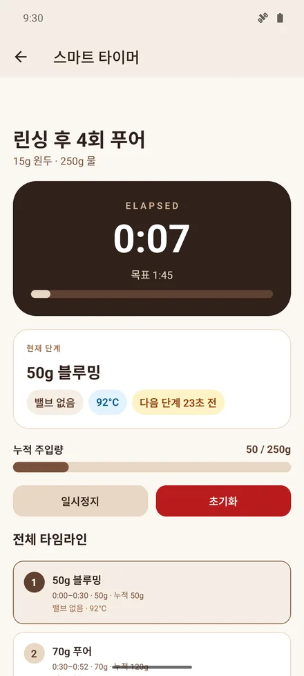
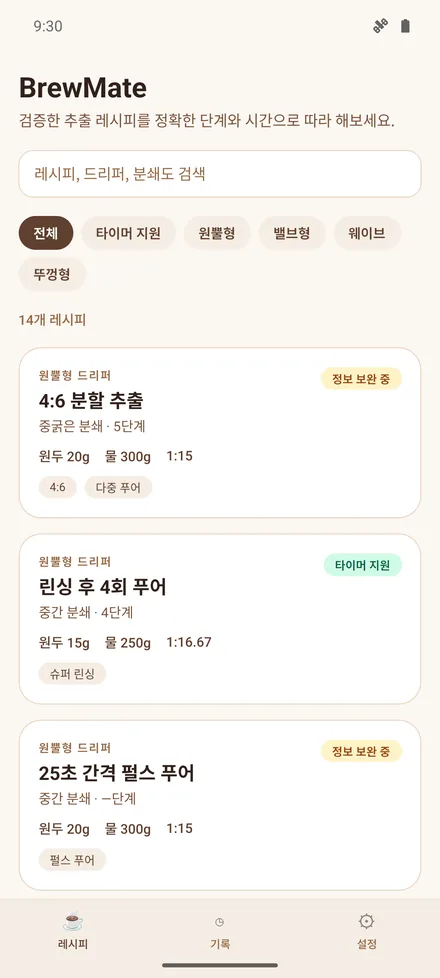
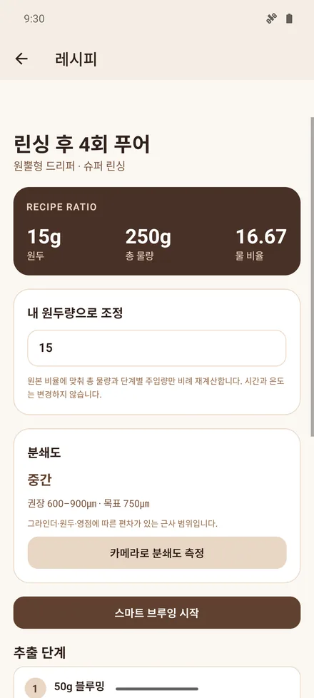
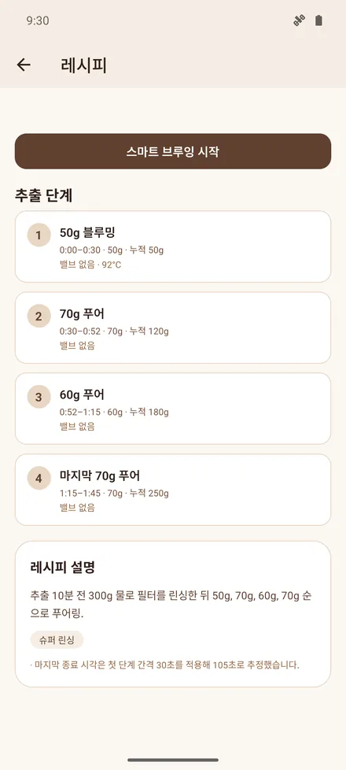
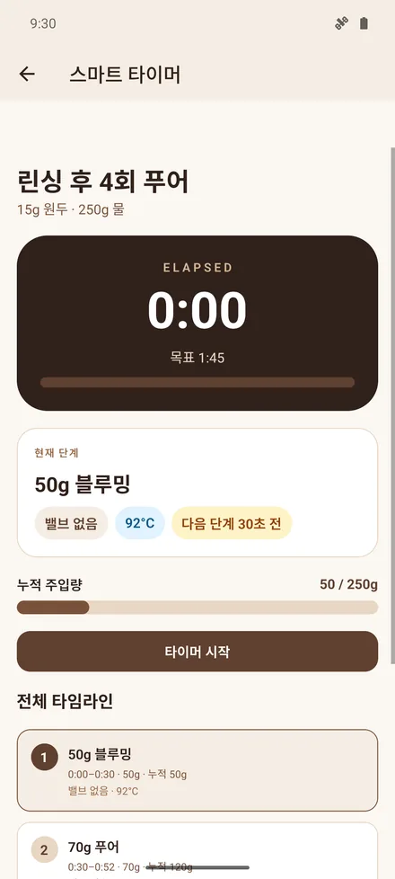
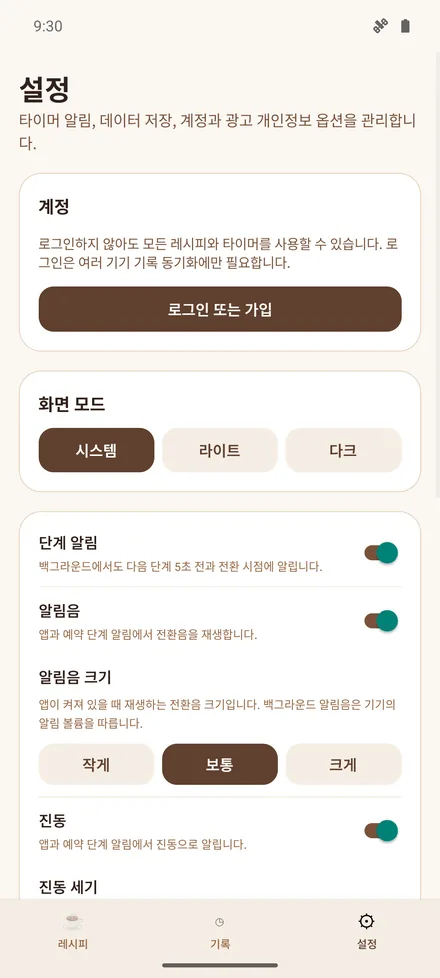
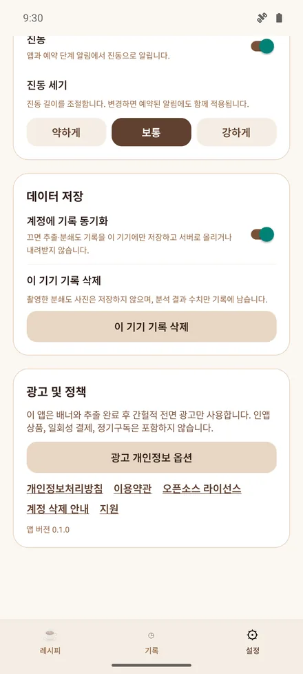
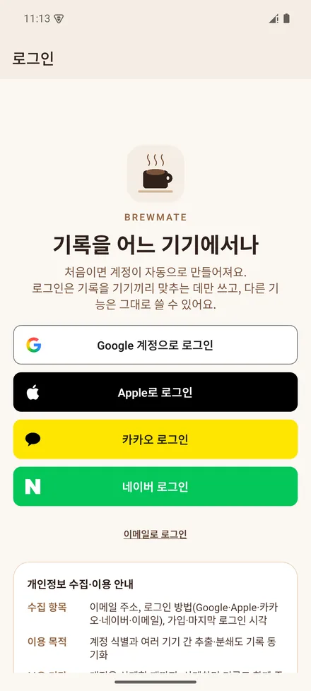

물은 언제,
얼마나 부어야 하나
레시피마다 정해진 시각·붓는 양·누적 양·밸브 상태를 순서대로 보여 주고, 다음 단계 5초 전에 미리 알려줍니다. 원두량을 바꾸면 물량이 같은 비율로 따라오고, 분쇄도는 100원 동전 하나로 감이 아니라 숫자로 봅니다.
- 레시피 14종
- 내 레시피 만들기
- 레시피 공유
- 단계형 타이머
- 물량 자동 계산
- 5초 전 알림
- 분쇄도 측정
- 추출 기록 · 통계
- 원두 노트
- 폰 · 태블릿








다른 타이머와 무엇이 다른가
스톱워치는 시간만 셉니다. BrewMate 는 지금 얼마나 붓고 있어야 하는지를 알고 있고, 원두량이 바뀌면 물량을 다시 계산합니다.
| 이런 상황 | 보통의 타이머 | BrewMate |
|---|---|---|
| 다음에 얼마나 부어야 하지 | 레시피를 따로 외우거나 봐야 함 | 단계마다 붓는 양 · 누적 양 · 밸브 상태를 순서대로 |
| 원두를 20g 대신 15g 씀 | 단계별 물량을 손으로 다시 계산 | 총 물량과 단계별 물량을 같은 비율로 자동 계산 |
| 단계가 바뀌는 순간 | 화면을 계속 보고 있어야 함 | 5초 전 예고 + 전환 시점을 알림음·진동으로 |
| 주전자 잡느라 앱을 잠깐 벗어남 | 시간이 밀리거나 멈춤 | 시작 시각 기준으로 다시 계산해 한 번도 밀리지 않음 |
| 추출 중 화면 | 꺼져서 다시 켬 | 추출 중에는 꺼지지 않음 |
| 분쇄도가 레시피에 맞는지 | 감으로 | 100원 동전과 찍으면 D50 · 편차 · 권장 범위 대비 |
| 지난주에 잘 나온 그 추출 | 기억에 의존 | 원두량 · 물량 · 평점 · 메모를 기록, 원하면 기기끼리 동기화 |
단계를 읽어 주는 타이머
레시피를 외우지 않아도 됩니다. 타이머가 지금 단계와 다음 단계를 말해 줍니다.
블루밍 50g → 푸어 70g → …
레시피의 각 단계가 시작 시각 · 붓는 양 · 누적 양 · 밸브 열림/닫힘 · 물 온도와 함께 순서대로 나옵니다. 현재 단계는 크게, 전체 타임라인은 아래에.
원두량만 바꾸면 끝
1:15 같은 비율을 그대로 두고 총 물량과 단계별 물량만 비례해서 다시 계산합니다. 시간과 온도는 바꾸지 않습니다.
다음 단계 5초 전에 미리
전환 5초 전과 전환 시점에 알림 · 알림음 · 진동으로 알려줍니다. 알림음 크기와 진동 세기는 각각 3단계, 끄는 것도 따로.
앱을 벗어나도 그대로
초를 세는 게 아니라 시작 시각을 기준으로 경과 시간을 다시 계산합니다. 전화가 와도, 잠깐 다른 앱을 봐도 시간이 어긋나지 않습니다.
추출 중에는 켜져 있음
주전자를 든 손으로 화면을 다시 켤 일이 없습니다. 추출이 끝나면 원래 설정으로 돌아갑니다.
밸브형 침지, 온도 단계까지
밸브를 닫고 담갔다가 여는 레시피, 단계마다 물 온도를 바꾸는 레시피도 단계에 밸브 상태와 온도가 같이 표시됩니다.
분쇄도, 감 대신 숫자로
그라인더 눈금은 기계마다 다릅니다. 100원 동전을 자로 삼아 입자 크기를 재고 레시피의 권장 범위와 견줍니다.
지름 24mm 를 기준으로
가루를 얇게 펼치고 100원 동전을 같이 찍으면, 동전 크기로 사진의 축척을 잡아 입자 크기를 µm 로 추정합니다. 다른 도구가 필요 없습니다.
D50 · 표준편차 · 히스토그램
입자 절반이 그보다 작은 크기(D50), 고르기(표준편차), 오차 추정치, 표본 수, 분포 그래프를 보여 줍니다.
"권장 600–900µm 안에 있음"
레시피마다 권장 범위와 목표값이 있습니다. 측정 결과가 굵은지 가는지 바로 판정해 줍니다.
분석하고 바로 폐기
촬영한 사진은 분석 서버에서 처리한 즉시 버립니다. 기록에는 결과 숫자만 남습니다.
레시피 14종, 드리퍼는 형상으로
원두량 · 물량 · 시간 · 온도 수치를 정리한 자료입니다. 14종 모두 단계 타이머를 지원합니다. 특정 인물이나 대회, 장비 제조사 이름은 쓰지 않고 드리퍼는 형상으로만 구분합니다.
원뿔형 · 7종
4:6 분할 추출 · 린싱 후 4회 푸어 · 25초 간격 펄스 푸어 · 15초 간격 10회 푸어 · 6-7-7-5-5 분할 푸어 · 온도 블렌드 단일 푸어 · 이중 분쇄도 4회 푸어
밸브형 침지 · 4종
하이브리드 밸브 전환 · 3단 온도 밸브 전환 · 3단 온도 침지 전환 · 리버스 아이스 침지
평저 웨이브 · 2종
웨이브 3회 푸어 · 웨이브 기본 2종 비율
뚜껑형 · 1종
뚜껑 아로마 보존 추출
원두 노트와 기록 통계
봉지를 등록해 두면 어떤 원두로 내렸는지가 기록에 남고, 쓴 만큼 남은 양이 줄어듭니다.
원두 노트
원두 이름 · 로스터리 · 로스팅일 · 봉지 용량 · 남은 양 · 메모. 로스팅 며칠째인지 보여 주고, 한 달이 지나면 표시합니다. 다 마신 봉지는 목록 아래로.
이번에 쓸 원두
레시피 화면에서 봉지를 고르고 타이머를 시작하면, 추출을 마칠 때 원두량만큼 남은 양에서 빠집니다.
기록 통계
완료한 추출 수 · 최근 7일 · 평균 추출 시간, 레시피별 횟수와 평균, 분쇄도 D50 추이 그래프(권장 범위 밖이면 주황색).
기록은 기기에, 동기화는 선택
로그인하지 않아도 레시피 · 타이머 · 분쇄도 측정 · 기록을 전부 씁니다. 로그인은 기록을 기기끼리 맞출 때만 필요합니다.
| 데이터 | 어디에 있나 |
|---|---|
| 추출 기록 · 분쇄도 기록 | 기기 안. 설정에서 "계정에 기록 동기화"를 켠 경우에만 서버에도 저장 |
| 즐겨찾기 · 레시피별 내 원두량 · 그라인더 메모 · 내 레시피 · 원두 노트 | 기기 안. 로그인 + 동기화를 켜면 다른 기기에서도 같은 값 |
| 공유한 레시피 | 링크 주소 안에만. 서버에 저장하지 않고 계정 정보도 들어가지 않음 |
| 로그인 정보 | 이메일 주소만 — Google · Apple · 카카오 · 네이버 로그인에서도 이름 · 프로필 사진은 받지 않음 |
| 분쇄도 측정 사진 | 분석 직후 폐기, 어디에도 저장하지 않음 |
| 광고 | Google AdMob, 비개인 맞춤 광고를 기본으로 하고 동의를 받은 뒤에만 요청 |
| 위치 · 연락처 · 사진첩 | 수집하지 않음 |
요금
무료로 다 쓸 수 있습니다. 광고를 없애고 싶을 때만 고르면 됩니다.
무료
레시피 · 타이머 · 분쇄도 측정 · 기록 · 동기화까지 전부. 화면 아래 배너 하나와, 앱을 켤 때 열 번에 한 번 나오는 앱 열기 광고가 있습니다.
광고 보고 24시간 없애기
설정에서 광고 한 편을 끝까지 보면 24시간 동안 광고가 사라집니다. 더 보면 뒤에 이어 붙습니다. Android · iOS 모두.
광고 제거 (iPhone · iPad)
1개월 · 6개월 · 1년 구독 또는 평생 한 번 결제. App Store 결제이며 같은 Apple 계정의 다른 기기에서 "구매 복원"으로 다시 씁니다. Android 에는 유료 상품이 없습니다.
폰에서도, 태블릿에서도
세로 · 가로 모두 지원하고, 넓은 화면에서는 레시피를 두 열로 놓습니다. 기기를 바꿔도 로그인하면 기록이 따라옵니다.
Android 폰 · 태블릿
Google Play 출시를 준비하고 있습니다. Android 7.0 이상.
iPhone · iPad
App Store 출시를 준비하고 있습니다. 아이패드는 가로 · 세로 모두 지원.
같은 기록, 여러 기기
설정에서 동기화를 켜면 폰에서 한 추출과 즐겨찾기, 레시피별 내 원두량 · 그라인더 메모, 직접 만든 레시피를 태블릿에서도 봅니다. 끄면 그 뒤로는 기기에만 남습니다.
자주 묻는 것
로그인해야 쓸 수 있나요?
아니요. 레시피, 타이머, 분쇄도 측정, 기록까지 로그인 없이 전부 됩니다. 로그인은 여러 기기에서 같은 기록을 보고 싶을 때만 하면 되고, 그때도 이메일 주소만 받습니다.
분쇄도 측정은 정확한가요?
참고용 근사치입니다. 사진 속 100원 동전으로 축척을 잡고 입자를 세기 때문에 촬영 조건과 입자 겹침에 따라 오차가 커집니다. 전문 입도 분석 장비의 결과를 대체하지 않으며, 같은 조건으로 찍어 전후를 견주는 용도로 쓰세요.
찍은 사진은 어디로 가나요?
분석 서버로 보내 계산한 뒤 즉시 버립니다. 데이터베이스나 저장소에 남기지 않고, 기록에는 D50 같은 결과 숫자만 남습니다.
레시피는 누구 것인가요?
원두량 · 물량 · 시간 · 온도 같은 수치 정보를 정리한 자료입니다. 특정 인물, 대회, 장비 제조사와 제휴하거나 보증 관계가 없고, 이름이나 상표를 쓰지 않습니다. 드리퍼는 원뿔형 · 평저 웨이브 · 밸브형 침지 · 뚜껑형처럼 형상으로만 구분합니다.
광고는 어떻게 나오나요?
화면 아래 배너 하나와, 앱을 켤 때 열 번에 한 번 나오는 앱 열기 광고뿐입니다. 타이머 진행 중이나 화면 이동 중에는 전체 화면 광고가 없습니다. 비개인 맞춤 광고가 기본이고, 동의 화면에서 고른 내용은 설정 → 광고 개인정보 옵션에서 다시 바꿀 수 있습니다.
Android 에서도 광고 제거를 살 수 있나요?
아니요. 광고 제거 구매는 App Store(iPhone · iPad)에만 있습니다. Android 에서는 광고를 한 편 보고 24시간 없애는 방법을 쓸 수 있습니다.
기록을 지우려면요?
기기 안 기록은 설정 → 데이터 저장 → 이 기기 기록 삭제. 계정과 서버의 기록은 설정 → 계정 → 계정 삭제로 즉시 지워집니다. 앱에 들어갈 수 없으면 계정 · 데이터 삭제 안내를 보세요.